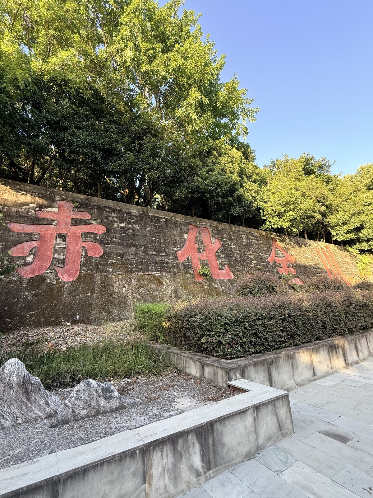
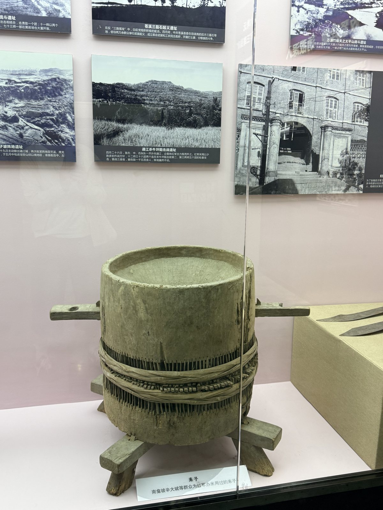

英名长存 · THE NAMES
十四万零八百二十
每一个名字，都曾经是一个会走路、会唱歌、会想家的人。
每一个名字，都曾经是一个会走路、会唱歌、会想家的人。
个红军将士英名 · 仍在增补
碑墙与纪念碑镌刻的，是四类人的名字：在战斗中牺牲的烈士，活到胜利的健在红军，因伤病因失散而流落各地的红军，以及川陕苏区的女红军。
同一个人，可能在烈士名录里，也可能在流落红军名录里——因为战争年代，一个人的下落往往只有“失踪”两个字。碑林做的事，就是把这些“失踪”，一个一个认领回来。

石刻标语 · 巴中被称为“石刻标语之乡”
碑墙上有一批“特别”的名字。川东北的长辈这样唤小辈，他们牺牲时，不过十几岁。
“狗娃”“黑娃”“女子”“土狗子”，是川东北长辈对小辈的乳名。叫得贱，好养活——这是山里人最朴素的祝愿。
他们大多是担架队、运输队、司号员、卫生员里的小红军，牺牲时不过十几岁；也有的因为家贫，一辈子只有小名。部队里沿用这个称呼，牺牲后，碑上也就照原样记了下来。
在一面刻满工整姓名的墙上，这些名字显得格外短，也格外重。

“拥护红军” · 石刻标语

浮雕墙上的支前场景
根据地建立后，获得解放的川陕边妇女投身革命，先后诞生了妇女独立营、独立团、独立师，成为中国革命史、中国人民解放军军史上一支重要的妇女武装力量。
她们剪短发、放足、学文化，抬担架、运粮草、上火线。碑林把女红军的名字单独镌刻，让这些长期隐在“家属”“支前群众”身后的名字，站到了石头上。
好多家里的七八个儿子参加了红军，解放后一个儿子也没有回来。名字好多人已经记不清了，只能以狗娃、二娃、二丫这样一些名字，我们把它也刻上。川陕苏区将帅碑林纪念馆副馆长 周宓 记
从十三万八千到十四万零八百二十，数字每年都在变。纪念馆仍在通过地方志、军史、家谱与家属来信，核对、补刻新的名字。
如果你家里也有参加川陕苏区红军的长辈，或许可以带着姓名、籍贯与参军年份，去纪念馆问一问——也许那面墙上，正缺一个名字。
参观与联系方式 →
馆藏革命文物 · 一万五千余件